MyICOMaker v1.0.1
Icon designer — draw with shapes, tools and effects, export .ico, .icns, PNG and SVG
1. Getting started
MyICOMaker is an icon designer: draw icons with shapes, tools and effects, then export a multi-size Windows .ico, a macOS .icns, a PNG set or an SVG. The desktop app (Tauri, Windows · macOS · Linux) and the web version share the same screens.
- On the start screen choose New icon or a template.
- Draw on the 512×512 canvas with the tools and shapes on the left.
- Set colours, gradients, outlines and effects on the right.
- Export ICO makes the icon file.
The design you work on is kept automatically; Continue on the start screen brings it back. To keep it as a file, save it as a .myico design with Ctrl+S.
2. Start screen
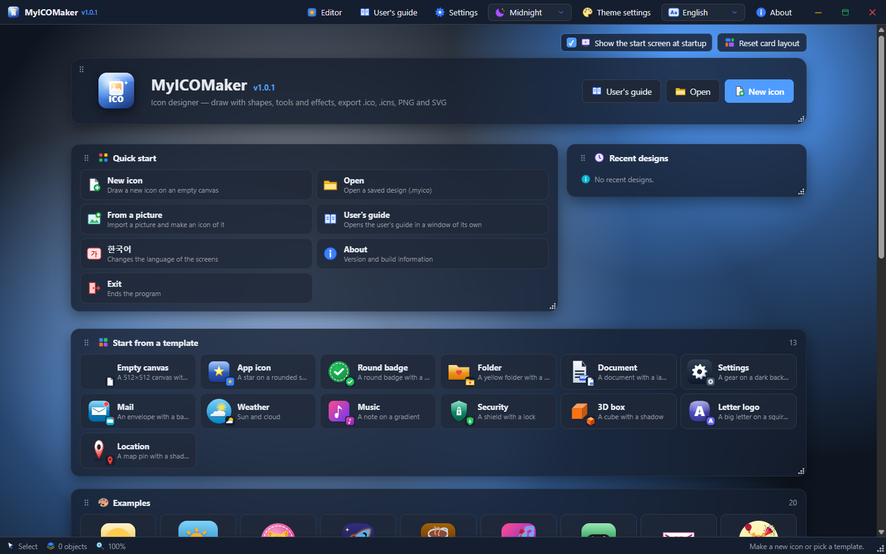
The program opens with translucent cards over a moving background. Drag a card by its handle (⋮⋮) to move it and by its bottom-right corner to resize it (double-click the corner to fit the content). Reset card layout puts them back.
- Quick start: new icon, open, from a picture, continue, user's guide, language, about, exit
- Recent designs (desktop): thumbnails and paths; ✕ removes one
- Start from a template: 13 designs to begin with
- Theme: six dark and six light themes
- Moving background: 20 backgrounds, random, speed and card opacity
| Template | What it is |
|---|---|
| Empty canvas | A 512×512 canvas with nothing on it |
| App icon | A star on a rounded square |
| Round badge | A round badge with a check mark |
| Folder | A yellow folder with a heart |
| Document | A document with a label |
| Settings | A gear on a dark background |
| An envelope with a badge | |
| Weather | Sun and cloud |
| Music | A note on a gradient |
| Security | A shield with a lock |
| 3D box | A cube with a shadow |
| Letter logo | A big letter on a squircle |
| Location | A map pin with a shadow |
Turn off Show the start screen at startup to go straight to the editor with your last design. The Start screen button in the title bar always brings it back.
3. Examples
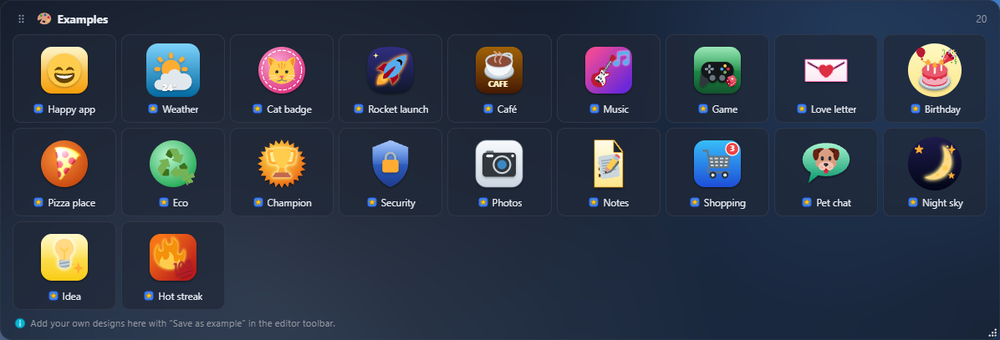
The Examples card on the start screen holds 20 finished icons made of shapes, emoji and effects, each with a preview. A click opens one as a new design to change as you like (the example itself stays as it is).
- Happy app
- Weather
- Cat badge
- Rocket launch
- Café
- Music
- Game
- Love letter
- Birthday
- Pizza place
- Eco
- Champion
- Security
- Photos
- Notes
- Shopping
- Pet chat
- Night sky
- Idea
- Hot streak
My examples
Save as example in the editor toolbar keeps the current design as one of My examples; they appear at the end of the card with a dashed border. The ✕ that shows on hover removes one (after asking). My examples are kept in the program's storage on this computer.
4. The editor
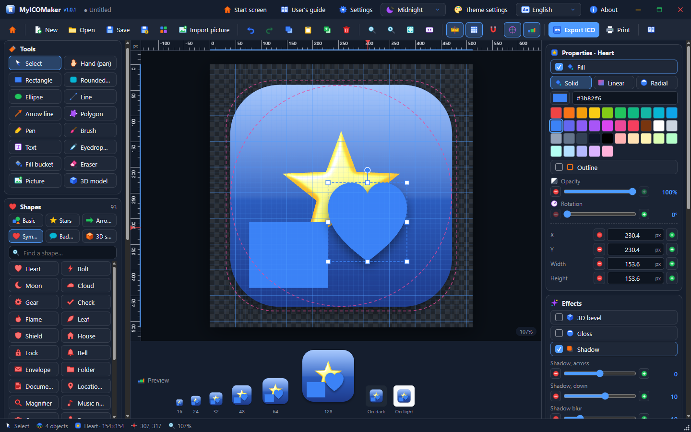
| Area | What it does |
|---|---|
| Title bar | Name and version, the file name (● unsaved), start screen, user's guide, theme and language drop-downs, about, minimize, maximize and close. Drag an empty part to move the window; double-click to maximize. |
| Toolbar | File, edit (undo, redo, copy, paste, duplicate, delete), view (zoom, fit, 100%, grid, snap, guides, preview), export ICO and print. When the window is narrow the labels hide and the icons stay. |
| Left panel | Tools, shapes (categories and search), layers |
| Canvas | The 512×512 design. The checkerboard is transparency; the backdrop, checkerboard, grid and rulers follow the theme. The rulers on top and left show the pointer as a red mark. The grid picks a new major step as you zoom and divides every major cell 5 × 5 again (snap sticks to the small cells). The preview strip below shows the icon at 16–128 pixels and on dark and light backgrounds as you draw. |
| Right panel | Properties, effects, arrange, background, export |
| Status bar | Tool, object count, selection, pointer position, zoom and messages; the grip at the right resizes the window. |
5. Tools
There are 14 tools, each with a letter key. After drawing, the Select tool comes back.
| Tool | Key | How |
|---|---|---|
| Select | V | Pick objects and move them; the handles resize and rotate |
| Hand (pan) | H | Drag to move the view (Alt+drag and the middle button work too) |
| Rectangle | R | Drag to draw a rectangle |
| Rounded rect | U | Drag to draw a rounded rectangle |
| Ellipse | O | Drag to draw an ellipse (Shift: circle) |
| Line | L | Draws a straight line (Shift: 45° steps) |
| Arrow line | A | Draws a line with an arrowhead |
| Polygon | G | Click the corners; double-click or Enter finishes (Esc cancels) |
| Pen | P | Draws freehand lines |
| Brush | B | Paints with a broad, see-through brush |
| Text | T | Puts text where you click |
| Eyedropper | I | Click an object to take its colour for new shapes |
| Fill bucket | K | Paints the clicked object with the current colour |
| Eraser | E | Click or rub over objects to delete them |
| Picture | Imports picture files (PNG, JPG, SVG, ICO, BMP, WebP, AVIF, TIFF, HEIC, DICOM) as objects. You can also drop files on the canvas or paste a picture with Ctrl+V. |
The selected object has eight handles to resize it (corner + Shift keeps proportions) and a round handle on top to rotate it (Shift: 15° steps). With Snap on, objects stick to the grid.
6. Shapes
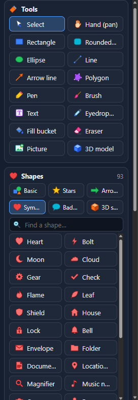
There are 93 shapes in six categories; every button shows its shape in colour. Type in Find a shape to search all categories. Pick a shape and drag on the canvas (Shift: keep proportions; a plain click makes 160×160).
Basic (20)
- Triangle
- Right triangle
- Diamond
- Trapezoid
- Parallelogram
- Pentagon
- Hexagon
- Heptagon
- Octagon
- Decagon
- Semicircle
- Pie
- Quarter circle
- Ring
- Frame
- Plus
- Capsule
- Drop
- Squircle
- Cross
Stars (10)
- 4-point star
- Star
- 6-point star
- 8-point star
- 12-point star
- Burst
- Seal
- Sun
- Flower
- Sparkle
Arrows (12)
- Right arrow
- Left arrow
- Down arrow
- Up arrow
- Left-right arrow
- Up-down arrow
- Chevron
- Pentagon arrow
- Play
- Fast forward
- U-turn
- Refresh
Symbols (30)
- Heart
- Bolt
- Moon
- Cloud
- Gear
- Check
- Flame
- Leaf
- Shield
- House
- Lock
- Bell
- Envelope
- Folder
- Document
- Location pin
- Magnifier
- Music note
- Camera
- Person
- Light bulb
- Clock
- Battery
- Infinity
- Trophy
- Trash can
- Wi-Fi
- Calendar
- Crown
- Gem
Badges (9)
- Speech bubble
- Square bubble
- Thought bubble
- Tag
- Bookmark
- Flag
- Banner
- Award ribbon
- Ticket
3D solids (12)
- Cube
- Cylinder
- Sphere
- Cone
- Pyramid
- Triangular prism
- Hexagonal prism
- Hemisphere
- Torus
- Coin
- Octahedron
- 3D capsule
3D solids shade their light and dark faces from the fill colour.
7. Emoji
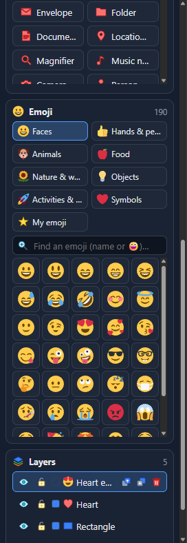
The Emoji card in the left panel has 190 colour emoji in 8 categories. A click puts one in the middle of the canvas, selected. Emoji are vector art, sharp at every export size, and move, resize, rotate, flip and take effects (shadow, glow …) like shapes. Search by name (English or Korean) or by the emoji itself (😀).
| Category | Count | For example |
|---|---|---|
| Faces | 40 | 😀 😃 😄 😁 😆 😅 😂 🤣 😊 😇 🙂 😉 … |
| Hands & people | 14 | 👍 👎 👏 🙌 👋 ✌ 👌 🤞 💪 🙏 🤝 👆 … |
| Animals | 25 | 🐶 🐱 🐭 🐰 🦊 🐻 🐼 🐨 🐯 🦁 🐮 🐷 … |
| Food | 23 | 🍎 🍊 🍋 🍌 🍉 🍇 🍓 🍒 🍑 🍍 🥑 🥕 … |
| Nature & weather | 20 | ☀ 🌙 ⭐ 🌟 ☁ ⛅ 🌈 ⚡ ❄ 🔥 💧 🌊 … |
| Objects | 26 | 📱 💻 ⌨ 🖥 📷 🎥 📺 🔋 💡 📚 📝 📎 … |
| Activities & travel | 18 | ⚽ 🏀 ⚾ 🎾 🎮 🎲 🎯 🎵 🎸 🎨 🚀 ✈ … |
| Symbols | 24 | ❤ 🧡 💛 💚 💙 💜 💔 💖 ✨ 💯 ✅ ❌ … |
My emoji — add what you need
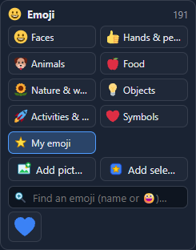
On the My emoji tab, Add pictures adds picture files (PNG, SVG …, several at once) and Add selection keeps the object selected on the canvas, as vectors. Use them like the other emoji; the ✕ that shows on hover removes one. Big pictures are kept at 256 pixels.
Emoji graphics: Twemoji (© Twitter, Inc. and other contributors, CC-BY 4.0)
8. 3D models
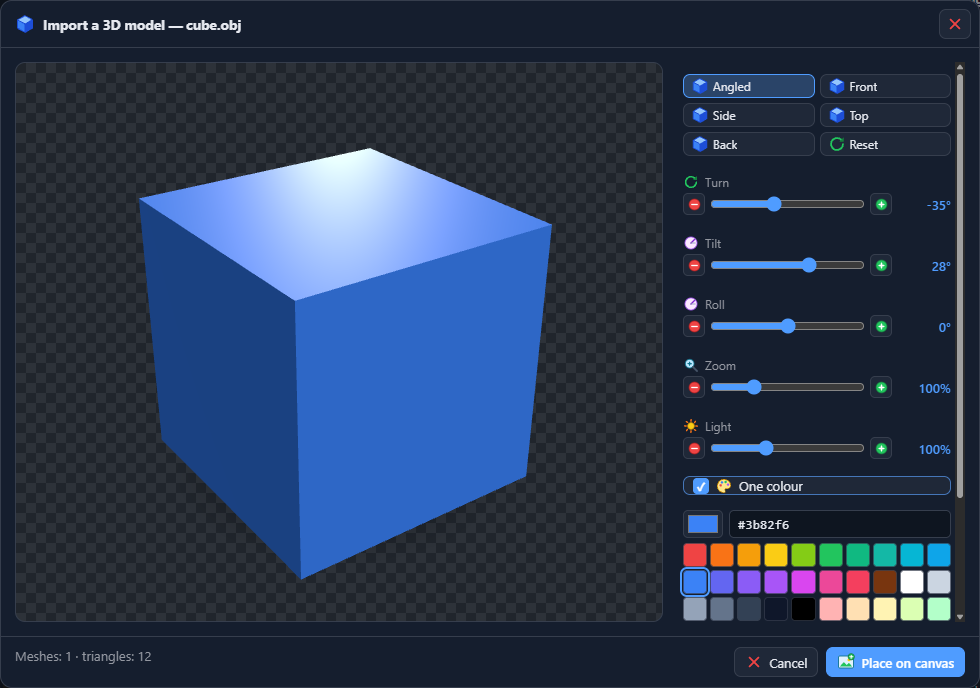
The 3D model button in the tools card, or dropping a file, opens a 3D model. Formats: OBJ, STL, PLY, GLB, GLTF, FBX, DAE, 3MF, 3DS, AMF, WRL. The import window shows the model on the left: drag to turn it, use the wheel to zoom. On the right choose the view (angled, front, side, top, back), turn, tilt and roll, zoom, light, one colour (with a colour), wireframe and the ground shadow. Place on canvas puts the view on the canvas as a 1024-pixel picture with a transparent background.
glTF (.gltf) files are read when their pictures and buffers are inside the file. Save a model made of several files as .glb.
9. Drag and drop
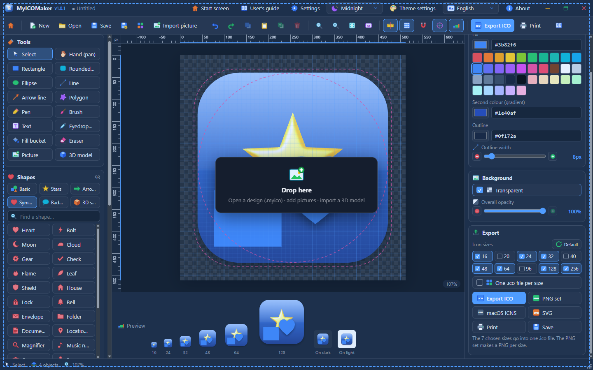
Drag files from the file manager onto any part of the window; while you drag, the window says Drop here.
- Designs (.myico) open (after asking about unsaved changes).
- Pictures (PNG, JPG, SVG, ICO, TIFF, HEIC, DICOM …) go on the canvas, several at once.
- 3D models (OBJ, STL, PLY, GLB, GLTF, FBX, DAE, 3MF, 3DS, AMF, WRL) open the 3D import window.
- Any other file is named in the status bar as one that cannot be opened.
Pictures on the clipboard paste with Ctrl+V.
10. Layers
The front-most object is at the top of the list. The eye hides and shows, the lock locks (locked objects cannot be picked on the canvas), the arrows move forward and backward, the bin deletes. Hidden objects are left out of exports.
11. Properties and effects
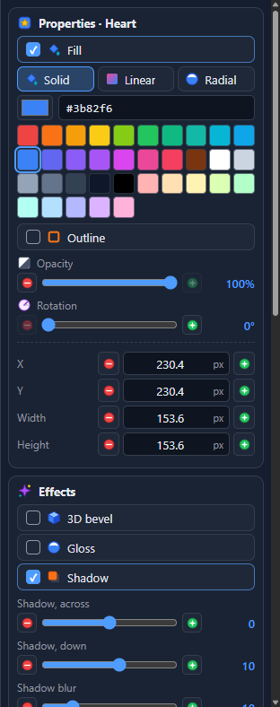
With nothing selected, the right panel sets the colours for new shapes (fill, second colour, outline, width). With an object selected it shows that object's properties.
- Fill: solid, linear gradient (angle) or radial gradient; colours from the picker, a hex value or 35 swatches
- Outline: colour, width, solid / dashed / dotted
- Rectangle: corner radius · Line: start and end arrowheads · Polygon: closed · Text: text, font, size, bold, italic
- Opacity, rotation, and X, Y, width and height (− / + or type a value)
Effects
- 3D bevel: depth and light position
- Gloss: a glassy reflection on the upper half
- Shadow: offset, blur, strength and colour
- Glow: size and colour
- Blur
12. Arrange
Align to the canvas (left, centre, right, top, middle, bottom), flip across or down, rotate by 90°, bring to front, send to back, forward, backward, centre, fill the canvas, duplicate and delete. Right-clicking an object shows the same commands.
13. Background
The background is transparent by default. Turn that off to choose a colour (or a two-colour gradient), a shape (square or circle), a margin and the corner rounding. Overall opacity applies to the whole picture.
14. Export
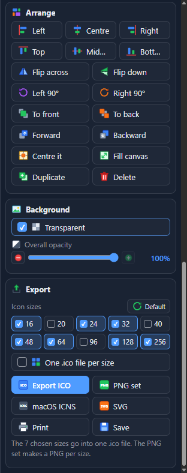
| Format | What you get |
|---|---|
| ICO | All chosen sizes (16, 20, 24, 32, 40, 48, 64, 96, 128, 256) in one .ico file. With One .ico file per size you get one file per size (desktop: a folder, web: a ZIP). |
| PNG set | A PNG for each chosen size |
| macOS ICNS | An .icns with every size from 16 to 1024 pixels |
| SVG | A vector picture of any size |
Default sets the sizes back to 16, 24, 32, 48, 64, 128 and 256.
15. Printing
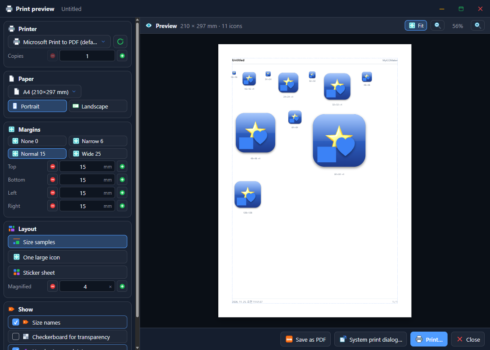
The Print button (toolbar, export card) or Ctrl+P opens the print window. Set things up on the left and check the preview on the right (fit, zoom; the dashed line shows the margins).
- Printer: the installed printers (default marked, refresh) and copies
- Paper: A3, A4, A5, B4, B5, Letter, Legal, Tabloid or a custom size (width, height in mm), portrait or landscape
- Margins: none, narrow, normal, wide, or each side in mm
- Layout: size samples (real size and magnified), one large icon (size in %), sticker sheet (size, spacing, cut lines)
- Show: size names, checkerboard, header (name), footer (date, page)
Print sends the page straight to the chosen printer; System print dialog… opens the operating system's dialog; Save as PDF writes the same page to a PDF file. Printing again from the editor updates the preview.
Printing the user's guide
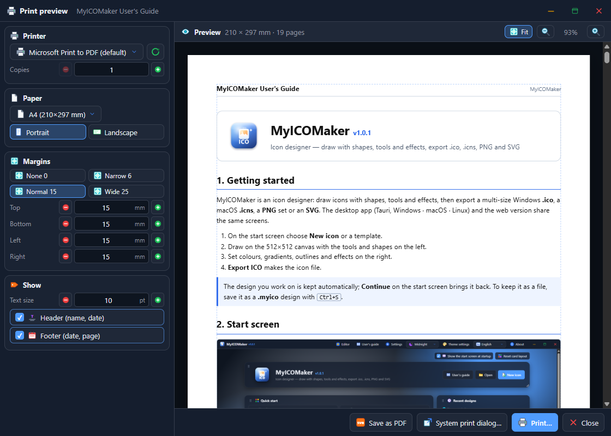
The user's guide is a window of its own, opened by the User's guide button (toolbar, title bar, start screen) or F1. Its Print button (Ctrl+P) opens the same print window for the guide: the guide is cut into pages of the chosen paper and margins (a heading never ends a page; a long table repeats its header row on the next page) and the preview shows every page. Instead of the icon-only options (layout, size names, checkerboard) you set the text size (pt). Printer, copies, paper, margins, header and footer (date, page number), direct printing, the system dialog and Save as PDF work as for icons.
16. Files
Designs are saved as .myico files (JSON). Imported pictures are stored inside, so the originals can move. After installing, double-click a .myico file to open it. With unsaved changes, New, Open and Exit ask first.
Pictures you can import: PNG, JPG, GIF, WebP, BMP, ICO, CUR, SVG, AVIF, APNG, TIFF, HEIC/HEIF and DICOM (.dcm).
17. Settings and themes
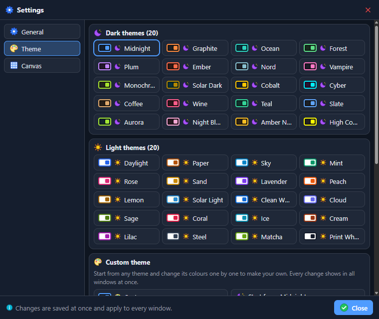
The Settings button in the title bar opens the settings window (General · Theme · Canvas); Theme settings opens its theme tab directly. There are 20 dark and 20 light themes (Midnight, Graphite, Ocean, Forest, Plum, Ember, Nord, Vampire, Monochrome Ink, Solar Dark, Cobalt, Cyber, Coffee, Wine, Teal, Slate, Aurora, Night Blossom, Amber Night, High Contrast, Daylight, Paper, Sky, Mint, Rose, Sand, Lavender, Peach, Lemon, Solar Light, Clean White, Cloud, Sage, Coral, Ice, Cream, Lilac, Steel, Matcha, Print White) and a custom theme: pick a theme to start from and change its colours one by one — background, panels, text, accent, canvas backdrop, checkerboard, grid, rulers and more. Every change shows at once in the main window, the settings window, the print window and the user's guide. The language (한국어 · English) is in the title bar and the settings window. Settings, window places and sizes are kept for the next start.
18. Shortcuts
| Key | Action |
|---|---|
| Ctrl+N | New |
| Ctrl+O | Open |
| Ctrl+S | Save |
| Ctrl+Shift+S | Save as |
| Ctrl+Z | Undo |
| Ctrl+Y / Ctrl+Shift+Z | Redo |
| Ctrl+C | Copy |
| Ctrl+V | Paste |
| Ctrl+D | Duplicate |
| Delete | Delete |
| Esc | Deselect |
| ← ↑ → ↓ (Shift) | Nudge the selection by 1 px (10 px) |
| Ctrl++ / Ctrl+− | Zoom in / Zoom out |
| Ctrl+0 | Fit |
| Mouse wheel | Zoom |
| Alt+drag, middle button | Hand (pan) |
| Ctrl+E | Export ICO |
| Ctrl+P | |
| F1 | User's guide |
| V | Select |
| H | Hand (pan) |
| R | Rectangle |
| U | Rounded rect |
| O | Ellipse |
| L | Line |
| A | Arrow line |
| G | Polygon |
| P | Pen |
| B | Brush |
| T | Text |
| I | Eyedropper |
| K | Fill bucket |
| E | Eraser |
19. Installing and removing
Run MyICOMaker-Setup-1.0.1.exe. First choose the installer language (한국어 / English): the installation runs in it and the program starts in it. If an earlier copy is installed you are asked whether to remove it and install again, and whether to delete the user data. You can choose the shortcuts (desktop, Start menu — with the user's guide).
20. Troubleshooting
- The exported icon looks blurry: thin lines smear at 16 and 24 pixels. Use thicker outlines and simple shapes; the preview strip shows the real sizes.
- A picture does not open: check that the format is supported; compressed DICOM cannot be read.
- The window is off screen: after a monitor change it opens centred at the next start.